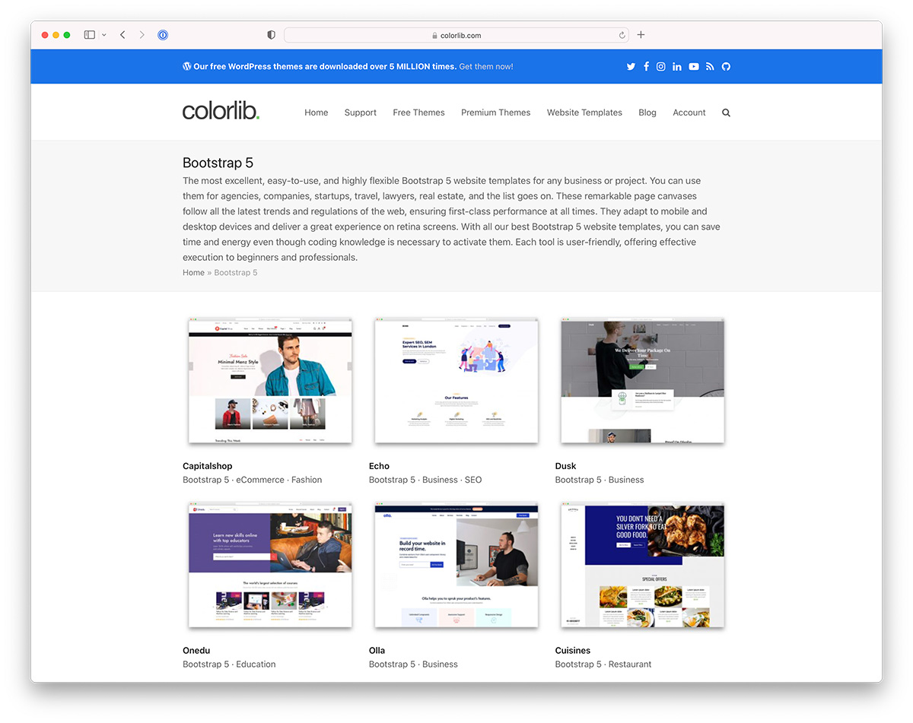

Answer the following questions.
Answer: Bootstrap is a free and open-source CSS framework directed at responsive, mobile-first front-end web development. It contains HTML, CSS and JavaScript-based design templates for typography, forms, buttons, navigation, and other interface components.
Answer: Not necessary. Useful, definitely. It provides a simple method for making responsive webpages. Although you could write such intricate CSS code on your own, most developers don't feel the need to reinvent the wheel. Since 2011, it has been the leading CSS library and framework with a sizable fanbase. It is responsive right out of the box because it employs a mobile-first strategy, which is a blessing. There are many third-party plugins, extensions, theme builders, and other tools that make it very simple to learn.
Colorlib is built using Bootstrap, but it also offers awesome Bootstrap 5 templates for any niche. They have everything from simple blog templates to complex eCommerce sites and marketplaces. This is the best resource around Bootstrap you can find on the web.
Wokine is an excellent example of how much you can accomplish with the Bootstrap Framework. Even though the entire website is in French, we aren’t here for the content.But the design.Awesome attention to detail, great scrolling transitions, parallax effect, semi-overlay menu, you name it. Wokine sets new standards with its eye-catchy look that inspires many of its website visitors. And that’s exactly what you want to achieve when offering design, branding and other innovative strategies as your primary business services. Amaze everyone. With. Your. Website.
Jack Watkins will work on your brand and website design. As a designer and developer yourself, you’ll have a blast reviewing Jack’s Bootstrap-based website. A minimal design that distributes content in a distraction-free way. I also like the clean navigation bar without capital letters. It’s not something you see daily. Each internal page is in great harmony with the home page, keeping the nice flow intact. If I’d need to describe Jack Watkins’s website with one word, I’d pick: bold. That’s the first impression that I got, which may be completely different from yours, but that’s OK.
If Bite Toothpaste Bits doesn’t grab your attention immediately, there are other Bootstrap websites that I’m sure will. But Bite does an excellent job with its design, too. No wonder why it got on our best-of list. I won’t write about what Bite’s purpose is. Remember, we are here for the design and to gain some inspiration. Everything starts with a full-screen image, text and CTA. As soon as you start scrolling, great content, effects and details start popping from all over the place.
When working on a marketplace (not necessarily a DIY), Etsy can be a great starting point to learn from. Design-wise, Etsy corresponds greatly with its crafters. Even though there’s a lot of information, product detail, images, reviews and related products, Etsy does not feel heavy. You easily immerse yourself in its worlds of handcrafted, vintage and other items.